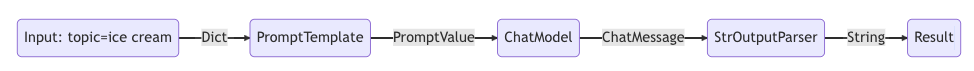

Notes on Growing 24/3
Tue
#LangChain으로 챗봇 개발중. 랭체인과 비슷한 다른 프레임워크는 없나? Microsoft의 Semantic Kernel이나 Guidance가 있지만 입문자에게는 LangChain이 더 나아 보인다. Griptape을 알게 되었지만 아직 ChromDB지원을 하지 않는 듯. 또한 커뮤니티가 부족해서 앞으로 배워가는 입장에서 좋은 상황은 아니라고 생각. #Open LLM이 더 괜찮을까? 현재 OpenAI 모듈을 피해서 오픈 소스 LLM을 사용하고 있음. 전자에 비해서 후자가 갖는 이점은 '무료'. 설레발이기는 하지만 장기적으로 서비스를 운영한다면 gpt 토큰 비용도 고려해 봐야 할 것이다(아직 견적을 내보지는 않았지만). 간단한 Single-turn 모델을 만들고 든 생각은 V100 서버여서 그런지 굉장히 느리다. 작은 사이즈의 1.5B 한국어 LLM을 사용했는데 성능도 좋진 않지만 대답을 얻기까지 시간이 꽤 지연된다. OpenAI를 쓰면 문제가 해결되는 것인지 내일 한 번 만들어보려 한다. 그리고 오늘 피어세션에서 얻은 정보는 SSE(Server Sent Event) 프로토콜. 한 번에 대답을 딱하고 내놓기 보다는 현재 GPT 서비스처럼 써 나아가는 것이 사용자 한테는 더욱 효과적이라는 것. 매우 동의한다. GPT는 이 프로토콜을 지원하고 있다. 여러모로 GPT에 끌리고 있다. 물론 LLM을 더 알아보기도 하고, 적은 Capa를 가지고 최대한 효율을 챙길 수 있는 방법도 찾아봐야 될 것.
Wed
#Nagative Sampling에 대해 학습했다. 블로그 포스트로 정리해보자. #LlamaIndex를 새로 알게되었다. 앞으로 챗봇을 개발하면서 어떤 LLM 프레임워크를 사용할지 고민중. LangChain과 유사하지만, RAG에 특화된 면이 있다. 코드가 좀더 직관적이다. RAG을 사용해서 청년 정책에 대한 대화를 주고 받는 것 이외에도 다양한 목적의 대화 기능을 생각하고 있기 때문에, 최종 Entity는 LLM Agent를 생각히고 있다. 다양한 어플리케이션을 추가하기에는 LlamaIndex보다 LangChain이 적합해 보인다.
Reference
- Word Vectors I, CS224n Lecture Note
- Comparing LangChain and LlamaIndex with 4 tasks, Medium
Thu
#Dependency Parsing에 대해 학습했다. 강의를 잘 듣지 못했기 때문에 강의노트를 더욱 참고할 수 있도록. #RAG Q&A 완성! 그동안 beomi/KoRWKV-1.5B에서 발생하는 문제를 일반화했던 게 개발이 지연된 원인. 같은 문장을 반복적으로 생성하는 문제가 있었는데 다른 LLM을 사용했을 때 문제가 사라졌다. 덕분에 PDF 기반의 RAG Q&A를 금방 만들 수 있었다. 허나 성능은 좋지 않다. 1) 답변이 정확하지 않다. 정책 문서를 참고하긴 하나 동문서답을 한다. 10.7B로 모델 사이즈를 키웠을 때 꽤 효과적이었다. 하지만 2) 응답 속도가 너무 느리다. 작은 사이즈도 짧은 쿼리에 최소 30초 이상 걸렸다. 큰 모델은 3분 정도 걸린듯. 지금 상황에서는 분명 속도와 성능을 함께 개선해야 된다. PEFT, LM Studio 그리고 sLLM 찾아보자. #git rebase로 commit 정리하기. repo setup할 때 자질구레한 commit이 많아 꼴보기 싫다. 이럴 때 rebase로 지저분한 commit을 밀어버리면 깔끔하게 setup할 수 있어 좋다.
# "git아 rebase해 줘, 대화형 모드(interactive)로다가, root에서 부터"
git rebase -i --root
-i flag는 --interactive. 편집하기 좋게 에디터에서 작업할 수 있다. 처음 commit부터 갈아버리려면 --root. 이외에도 HEAD^, HEAD^^, HEAD~3, hash 등 원하는 시점 지정 가능
# 유지할 commit만 pick, 합칠 commit들은 pick을 squash 또는 s로 바꾸자
# 여기에선 '12345'에 나머지 두 commits을 합친다.
pick 12345 커밋 메시지 A
squash 67890 커밋 메시지 B
squash abcde 커밋 메시지 C
저장하고 나서, 새롭게 남길 commit message 작성하기
git push origin <branch name> --force
hub에 쏠 때, --force 옵션으로 빡세게 쏴줘야 한다.
Fri

#LangChain Expression Language(LCEL) 설명에 따르면, 다양한 기능들이 블록처럼 정의되어 있어 필요에 따라 끼워 맞추기만 하면 된다. 이러한 블록들을 연결하여 파이프라인을 만든다는 의미에서 Lang'Chain'인 것 같다.
# 예시 1
chain1 = prompt | model
# 예시 2
chain2 = prompt | model | outputparser
# 예시 3
chain3 = model | outputparser